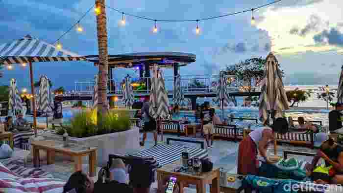
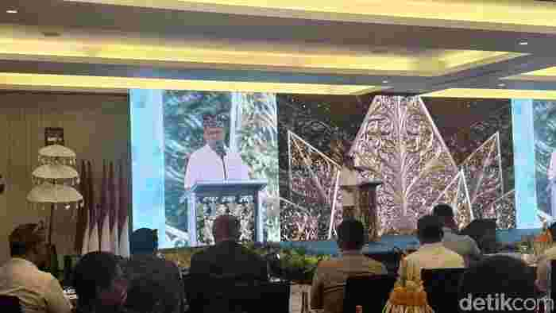
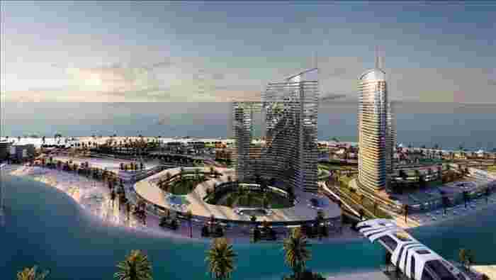
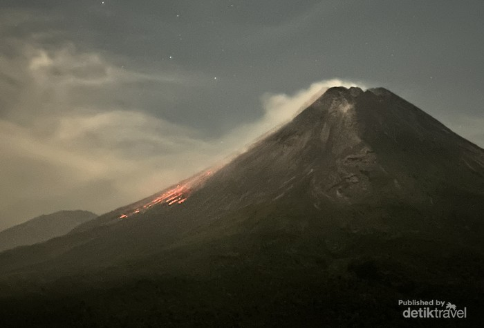

Kerja Sama Regional Bali, NTB, NTT Lokomotif Pertumbuhan Indonesia Timur
Kerja Sama Regional Bali, NTB, NTT Lokomotif Pertumbuhan Indonesia Timur
Mataram - Pemerintah Provinsi (Pemprov) NTB mendorong kolaborasi tiga provinsi Bali, NTB, dan NTT menjadi model kerja sama regional antar daerah jadi lokomotif pertumbuhan ekonomi baru di Indonesia. Ketiga provinsi ini diharapkan menjadi pusat pariwisata internasional dan penggerak kesejahteraan masyarakat di wilayah Indonesia Timur.
Pemprov NTB Usul Perubahan Status Konservasi Gili Trawangan demi Pariwisata
Mataram - Pemerintah Provinsi (Pemprov) Nusa Tenggara Barat (NTB) mengusulkan perubahan status kawasan konservasi hutan di Gili Trawangan menjadi kawasan bukan konservasi ke pemerintah pusat. Usulan itu dilakukan demi mendapat kepastian hukum bagi aktivitas pariwisata di Gili Trawangan.
Koster Tegaskan Bali Tak Butuh Status Otonomi Khusus untuk Pariwisata
Badung - Gubernur Bali, Wayan Koster, menegaskan bahwa Bali tidak membutuhkan status otonomi khusus (OTS) yang selama ini diusulkan oleh beberapa pihak. Menurutnya, Bali sudah memiliki keistimewaan yang cukup, terutama dalam bidang budaya dan pariwisata.
Ambisi Mesir Bangun New El-Alamein, Kota Masa Depan di Tepi Laut Mediterania
Kairo - Mesir tengah menggarap proyek ambisius di pesisir Laut Mediterania. Sebuah kota baru bernama New El-Alamein sedang dibangun dengan nilai investasi mencapai 160 juta poundsterling (Rp 3,4 triliun).
Pesona Lukisan Lava Merapi di Malam Hari Via Bukit Turgo
Sleman - Bukit Turgo menjadi salah satu titik terbaik untuk menyaksikan keagungan Gunung Merapi di malam hari. Terletak di Kawasan Taman Nasional Gunung Merapi, tepatnya sekitar 2 km dari gunung Merapi itu sendiri.
 Madinah Kota Nabi Jadi Destinasi Utama Kawasan, Al Ula Diminati Wisman
Madinah Kota Nabi Jadi Destinasi Utama Kawasan, Al Ula Diminati Wisman
Jakarta - Madinah kembali menegaskan posisinya sebagai kota suci pilihan wisatawan di kawasan ini. Berdasarkan laporan terbaru Madinah Chamber of Commerce, sekitar 73,7 persen wisatawan memilih Madinah sebagai destinasi utama mereka.